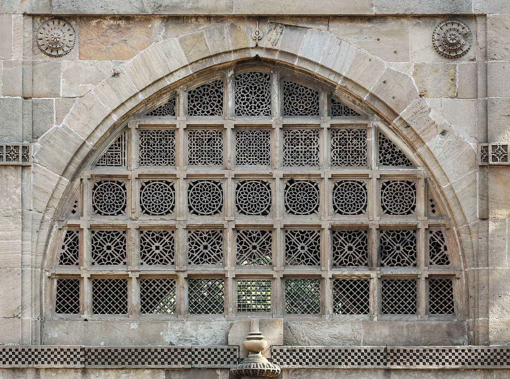

Chapter 7: Dāru, Danta and Śilā: Wood, Ivory and Stone¶
Wood was the first building material of India and remained the material of most houses, of much temple architecture in the Himalaya and Kerala, and of furniture, carts, boats, tools, toys and images. Because it decays, little old woodwork survives, but the earliest Indian stone architecture, in the rock-cut halls of the western Deccan and the gateways of Sanchi, faithfully copies wooden forms, beams and joints. This chapter is about the crafts of cutting, joining and carving hard materials. It surveys the carpenter and his regional traditions, furniture and boats, the makers of musical instruments, sandalwood and the lac-turned and painted wooden toys of several regions, and then ivory and stone, which were carved with related tools and often by related communities. Bamboo, cane and the softer plant fibres, worked by different methods and usually by different people, have a chapter of their own (Chapter 8).
7.1 The Carpenter¶
The carpenter (takṣan, later vardhaki, Hindi Baṛhaī, Tamil Taccaṉ, Malayalam Āśāri) appears in the earliest Vedic texts, where the poet’s hymn is compared to a chariot built by a skilled craftsman. In the village economy of later centuries the carpenter made and repaired ploughs, carts and doors, and was paid in grain (Chapter 13). In south India carpenters form one of the five Viśvakarma crafts (Chapter 2).
7.1.1 Selecting Timber¶
The Bṛhatsaṃhitā (6th century) devotes a chapter to the selection of wood for images. The craftsman enters the forest on an auspicious day, chooses a suitable tree, worships it the night before and asks the beings who live in it to move elsewhere; the manner and direction of the tree’s fall are read as omens (Bhat 1981–1982). The architectural treatises classify timbers by suitability and list trees to be avoided, such as those struck by lightning or growing in cremation grounds. The woods most prized for building and carving include teak (śāka), sal, deodar (devadāru) in the Himalaya, jackfruit and rosewood in the south, and for fine work, sandalwood and ebony.
7.2 Regional Traditions of Woodwork¶
7.2.1 The Himalaya¶
In the hills of Himachal Pradesh and Uttarakhand, houses and temples are built in the kāṭh-kuṇī technique, with alternating courses of dry stone and long horizontal timbers interlocked at the corners. The timber cage gives the walls flexibility in earthquakes. The temples of the Kullu, Mandi and Chamba regions, such as the Hiḍimbā Devī temple at Manali (1553) and the older Lakṣaṇā Devī temple at Bharmaur, have carved wooden doorways, pillars and brackets. Kashmir has a separate tradition of fine carving in walnut wood and of khatambandh ceilings, made of small pieces of wood fitted into geometric patterns, and of pinjrakārī, lattice-work screens of small turned or cut pieces of wood joined without glue. The wooden mosques and shrines of Srinagar, such as the Shāh-i Hamadān shrine, with their tiered pyramidal roofs, are the finest monuments of Kashmiri carpentry, and the houseboats of the Dal and Nagin lakes, built from the late nineteenth century for European visitors, display the same skills of panelling and carving.
7.2.2 Gujarat and Rajasthan¶
The towns of Gujarat, such as Ahmedabad, Patan, Vadnagar and Surat, preserve carved wooden house facades (havelīs) and the elaborately carved wooden shrines of Jain households and temples. Carved brackets with figures of musicians, dancers and animals, balconies and doors are characteristic. In Rajasthan, the carved and painted doors and furniture of Shekhawati and the carved wood of Jodhpur and Barmer continue as industries, now largely for export.
7.2.3 Kerala and the South¶
Kerala’s temples, palaces and large houses (nālukeṭṭu, “four blocks” around a courtyard) are built with stone or laterite bases and walls and elaborate timber superstructures and roofs. Their carved ceilings, brackets and doorways, and the temple theatres (kūttampalam) built for the performance of Kūṭiyāṭṭam, show the art of the Kerala carpenter at its finest. The Padmanabhapuram palace (16th–18th centuries) is the best preserved example. Carved wooden processional chariots (ratha, tēr) for temple festivals are made throughout south India, some of them several storeys high.
7.2.4 Saharanpur and Other Centres¶
Saharanpur in Uttar Pradesh developed in the nineteenth century as a major centre of carved furniture and decorative woodwork, with inlay in brass and bone. Hoshiarpur in Punjab was known for wood inlaid with ivory (now bone or plastic), and Mainpuri for tārkashī, brass-wire inlay in wood (Chapter 3).
7.3 Furniture¶
Traditional Indian interiors had little furniture by European standards: people sat and slept on mats, carpets, cushions and low stools, and the most widespread piece of furniture was the cot (chārpāī), a wooden frame strung with rope or tape. Courts used thrones, low platforms, chests, palanquins and canopied beds. From the seventeenth century, Europeans in India commissioned furniture in European forms from Indian craftsmen, who adapted it with Indian materials and ornament: cabinets and desks from Gujarat and Sindh inlaid with ivory and ebony, furniture veneered with engraved ivory from Vizagapatam (Visakhapatnam) in the eighteenth century, and the heavily carved “blackwood” (rosewood) furniture of Bombay in the nineteenth. Such “Anglo-Indian” furniture was later adopted by Indian households as well, and carved furniture remains a major craft industry, now largely for export.
7.4 Boats and Ships¶
Some of the most skilful Indian woodworkers were boat- and ship-builders. Indian Ocean ships were traditionally built with planks sewn together with coir rope rather than nailed, a technique well suited to beaching on sandy coasts. At Beypore in Kerala, carpenters still build large wooden sailing ships of the dhow type (uru), mainly for owners in the Persian Gulf, without written plans, from teak and other hardwoods. The river boats of Bengal and Assam, the snake-boats (cuṇṭan vaḷḷam) used in the boat races of the Kerala backwaters, and the fishing craft of every coast are products of distinct regional traditions. In the late eighteenth and early nineteenth centuries, Parsi master-builders of the Wadia family at the Bombay dockyard built teak warships and merchant ships for the East India Company and the Royal Navy, some of which remained in service for many decades (Wadia 1955). Indian shipbuilding is discussed further in Volume 19.
7.5 Musical Instruments¶
Instrument-making is a specialised branch of woodwork. It also draws on the skills of the turner, the inlayer, the metalworker and the leather-worker, and above all on acoustic judgement. Many instrument-makers come from carpenters’ communities, but the trade has recruited from many others. The history of the instruments as music, their classification and their acoustics are treated in Volume 9, Saṅgīta–Nāṭya; this section is concerned with the makers, their materials and their workshops (Deva 1978).
7.5.1 The Vīṇā of Thanjavur¶
The Sarasvatī vīṇā of south India is made above all at Thanjavur, where it took its modern form under the Nāyaka and Maratha courts. Its large resonating bowl is carved from a block of seasoned jackwood (Artocarpus heterophyllus). In the most prized form, the ekāṇḍa (“single-piece”) vīṇā, the bowl, the neck and the dragon-like yāḷi head are carved from one log; in others the parts are carved separately and joined. The bowl is hollowed to a thin, even wall and closed with a soundboard of the same wood. The hollow neck carries twenty-four brass frets set in a ridge of black wax, so that the maker, and later the player, can shift each fret slightly to correct its pitch by ear. A second resonator, traditionally a gourd, is fixed under the upper end of the neck. Inlaid decoration of ivory or deer horn has largely given way to bone and plastic since the ivory trade was banned. The work is done in small family workshops, in which the carving of the bowl, the fitting of neck and frets and the final adjustment may be divided among different hands. The Thanjavur vīṇā is a registered Geographical Indication.
7.5.2 Sitār and Tānpurā¶
The sitār and the tānpurā combine a resonator made from a dried gourd (tumbā, Lagenaria siceraria) with a neck and soundboard of wood, usually tun (Toona ciliata) or teak. The gourds are grown for the purpose, dried for months, cut, cleaned and strengthened inside before the soundboard is fitted; the neck is hollowed and fitted with pegs and, on the sitār, with frets, and the whole is polished and decorated with inlay or carving. The most delicate operation is the shaping of the broad bridges of bone (formerly ivory or stag horn). Their slightly curved upper surfaces, together with the threads (jīvā) placed under the strings of the tānpurā, produce the buzzing resonance called jawārī (Volume 9). Because the strings wear grooves in the bridge, the jawārī must be “opened” again from time to time, so musicians keep returning to the maker, and the relationship between player and maker lasts as long as the instrument is played. The sitār itself reached its modern form only over the nineteenth and twentieth centuries, as players and makers together added strings and frets and enlarged the instrument (Miner 1993).
Miraj, in southern Maharashtra, is the best-known centre of sitār and tānpurā making. Family tradition traces the craft to the mid-nineteenth century. Metalworkers of the Muslim Shikalgar community, whose name comes from the Persian for a polisher of weapons, began then to repair the instruments of musicians at the court of the Patwardhan chiefs of Miraj. Their descendants turned to making instruments and now supply musicians across India. The town’s association with the singer Abdul Karim Khan of the Kirana tradition, who lived there, added to its reputation among vocalists. Kolkata, Varanasi and Delhi have other important workshops. In Kolkata the makers Hiren Roy and the firm of Kanailal are commonly associated with the instruments, and the different sound ideals, of Vilayat Khan and Ravi Shankar respectively: an instance of the close collaboration between performer and maker in fixing the form of an instrument.
7.5.3 Drums and Their Makers¶
Drums bring the woodworker and the leather-worker together. The shells of the mṛdaṅgam and the pakhāvaj are carved or turned from jackwood or other hardwoods, and the right-hand drum of the tablā from a block of dense wood; the left-hand drum is of copper, brass or clay. The heads are of goatskin or calfskin, laid in several layers and laced with braces of hide. The black loading paste is built up on the head in thin layers and rubbed down with a stone until the drum gives a clear pitch (Volume 9). The maker must judge the thickness and quality of each skin, the tension of the lacing and the composition and weight of the paste, and the player depends on him for repairs and new heads. Laws protecting wild animals have also changed the craft: the small south Indian frame drum kañjira was traditionally headed with the skin of the monitor lizard, and since the animal was protected under the Wildlife (Protection) Act of 1972, makers have turned to goatskin and synthetic heads.
Because they handle skins, drum-makers have often come from castes treated as untouchable, even when their instruments were played by high-caste musicians in temple and concert music. T. M. Krishna’s history of the makers of the mṛdaṅgam in Tamil Nadu, most of them Dalits and many of them Christians, traces the families who made instruments for the leading performers of the twentieth century, among them the family of Sebastian that gives the book its title. It shows that the makers’ knowledge of hides, pastes and tuning shaped the sound of Karnatak percussion. The makers themselves, however, were kept at a social distance by the Brahmin musicians who relied on them and were scarcely acknowledged in the histories of the music (Krishna 2020). Similar questions arise for the makers of tablā and pakhāvaj in the north, and for village drum-makers, whose drums are often played by the same communities at festivals and funerals. Leather-work in general is discussed in Chapter 9.
7.5.4 Wind Instruments¶
Bamboo flutes are made in many places, but the town of Pilibhit in Uttar Pradesh has become the main centre of their manufacture, working thin-walled bamboo much of which is brought from the North-East. The maker burns the finger-holes with heated iron rods and tunes the flute by adjusting their size and position. The nāgasvaram, the double-reed instrument of south Indian temple music, is made by turners at Narasingapettai near Kumbakonam, traditionally from the dense wood of the ācā tree (Hardwickia binata), with a separate flared bell and a reed cut from a dried marsh grass.
7.6 Sandalwood¶
Sandalwood (candana, Santalum album) is prized for its close grain and its fragrance, and is used for images, boxes, fans and small carvings; its oil is a basis of Indian perfumery (Chapter 10). The finest sandalwood came from the forests of Mysore and the Western Ghats. The Gudigār community of the coastal and Malnad districts of Karnataka (Sagar, Sirsi, Kumta) are the best-known sandalwood carvers.
Sandalwood has long been a state monopoly in Karnataka; Tipu Sultan is said to have declared it a royal tree in the late eighteenth century, and for most of the twentieth century every sandalwood tree, even on private land, was the property of the state. Laws were liberalised in the early twenty-first century. Over-exploitation, smuggling (the brigand Veerappan, killed in 2004, was its most notorious figure) and disease have drastically reduced the wild population, and Santalum album is classed as vulnerable by the International Union for Conservation of Nature. Carvers increasingly use other woods.
7.7 Lacquered and Painted Wooden Toys¶
India has many traditions of wooden toys, often made by communities who also make ritual objects and furniture (Ranjan and Ranjan 2007). They fall into two broad families. The first is turned and lacquered. At Channapatna in Karnataka, toys are turned from the light, fine-grained wood of aale mara (Wrightia tinctoria) and coloured by pressing a stick of coloured lac against the object as it spins on the lathe, so that the lac melts with the heat of friction and coats the surface; local tradition credits Tipu Sultan with encouraging the craft, and Channapatna toys are a registered Geographical Indication. Etikoppaka in Andhra Pradesh uses a similar technique, now with vegetable colours, and Varanasi has its own lacquered toys and small objects. In Kutch the Vāḍhā community turns and lacquers wood on the bow-lathe.
The second family is carved and painted. At Kondapalli in Andhra Pradesh, figures and groups are carved from the soft wood of tella poniki (Givotia), joined with a paste of tamarind seed and sawdust, and painted with village scenes, bullock-carts, animals and deities. The craftsmen of Nirmal in Telangana have made carved and painted figures, toys, furniture and paintings in a style of their own since the time of the Nizams. At Sawantwadi in Maharashtra, lacquered and painted toys, fruits and furniture are made alongside the circular playing cards of the gañjīfā game (Chapter 11).
Modern Relevance: Wood, Forests and Craft
Woodcraft depends on access to forests, and modern forest law has often worked against artisans. Restrictions on felling, introduced to protect forests, have made traditional timbers scarce and expensive for carvers and toy-makers, while large-scale commercial felling continued for much of the twentieth century. Many communities now use plantation woods such as mango, acacia and rubber-wood; the challenge is to secure legal and sustainable supplies of timber for the craftsmen who depend on it.
7.8 Woodworkers Today¶
The village carpenter remains an essential figure in rural India, making and repairing doors, windows, furniture, ploughs and carts, though steel, plastic and factory-made goods have replaced many of his products. Urban carpenters, many of them migrants, build and fit furniture in the cities. Carving and inlay survive mainly where they have found tourist, export or temple markets, as in Saharanpur, Hoshiarpur, Kashmir, Mysore and the temple towns of the south. Machine tools such as electric saws, lathes and routers have been widely adopted, and computer-controlled carving machines now reproduce traditional designs; the hand-carver competes with them on quality and individuality rather than on price. Training programmes and design interventions have tried to help carvers find new products and markets, with uneven success.
7.9 Ivory¶
Ivory carving is one of the oldest luxury crafts of the subcontinent. Ivory combs, pins and dice are found in the Indus cities. One of the gateways of the great stūpa at Sanchi (late first century BCE or early first century CE) bears an inscription recording that a carving on it was made by the ivory-workers (dantakāra) of Vidiśā, a precious reference to a craft group as donor and maker. An Indian ivory statuette of a woman, perhaps a yakṣī or the goddess Śrī, was found at Pompeii, buried in 79 CE, and a hoard of carved ivories of the first or second century CE, mostly Indian in style, was excavated at Begram in Afghanistan.
In later centuries ivory was carved in many courts and cities: in Orissa, in Mysore and Travancore, in Delhi, and in Murshidabad, where under the Nawabs of Bengal carvers made boats, figures and caskets. A throne of carved ivory, sent by the Maharaja of Travancore, was among the most admired Indian exhibits at the Great Exhibition in London in 1851.
Scholarly Note: The End of Ivory Carving
The international trade in ivory was banned under the Convention on International Trade in Endangered Species (CITES) from 1990, and India’s Wildlife (Protection) Act, as amended in the early 1990s, banned trade in both Indian and imported ivory. The ban was necessary to protect elephants, whose populations had been devastated by poaching. Former ivory carvers turned to bone (mostly camel bone), horn, wood and resin. The craft as such has effectively come to an end, and surviving historical ivories are now museum objects.
7.10 Stone¶
Stone sculpture and architecture are treated as arts in Volume 16 of this series; here we consider stone-working as a craft. Quarrying, splitting, dressing, carving and polishing stone were the work of specialised communities of masons and sculptors, whose skills are visible in monuments from the polished Mauryan pillars of the third century BCE to the temples of the present day.
7.10.1 Techniques¶
Stone was split from the quarry by cutting rows of wedge-holes and driving in wooden or iron wedges, a method whose marks can still be seen at ancient quarries and on unfinished monuments. Carving proceeded from rough blocking-out with heavy chisels to fine work with small chisels, drills and abrasives; the final surface could be left textured or polished with fine sand and leather. The high polish of Mauryan pillars and of some later sculptures was obtained by long abrasion. Different stones demanded different techniques: the soft sandstones of central India and the schists of Gandhāra and of the Hoysaḷa temples (the chloritic schist often called soapstone) allowed deep and intricate carving, while the granite of Tamil Nadu required great labour for every detail.
7.10.2 Living Traditions¶
Hereditary stone-carvers still work in many parts of India. At Mamallapuram, near the seventh- and eighth-century Pallava monuments, granite carvers make images for temples and for sale. In Odisha, the stone-carvers of Puri and Bhubaneswar carve sandstone, chlorite and soapstone in the style of the medieval temples, and some families have preserved palm-leaf manuscripts of śilpa texts (Chapter 2). In Rajasthan, the white marble of Makrana, used for the Taj Mahal, and the stones of Jaisalmer, Dholpur and other quarries are carved into screens, images and architectural elements; the marble temples of the Jains at Mount Abu (11th–13th centuries) show the extraordinary delicacy that marble carving can achieve.
7.10.3 Screens and Inlay¶
Two specialities of Indo-Islamic architecture deserve mention. Pierced stone screens (jālī), cut from a single slab in geometric or floral patterns, admitted light and air while giving privacy; the screens of the Sidi Saiyyed mosque at Ahmedabad (1573; Figure 7.1) and of Mughal tombs and palaces are famous examples. Inlay of coloured stones in marble (Persian parchīnkārī, often called by the Italian name pietra dura) reached its height in seventeenth-century Mughal buildings such as the tomb of Iʿtimād al-Daula at Agra and the Taj Mahal. Whether the Mughal technique derived from Florentine work brought by European craftsmen or developed from earlier Indian and Persian inlay is debated. Craftsmen in Agra continue to make inlaid marble objects today, largely for tourists.


7.10.4 Hazards¶
Stone-carving and quarrying expose workers to silica dust. Silicosis, an incurable lung disease, is widespread among quarry workers and stone-carvers in Rajasthan and elsewhere, and has become a major issue for labour and health campaigners. In 2019 the government of Rajasthan announced a policy on compensation and rehabilitation for workers affected by the disease.
Further Reading¶
For a regional encyclopaedia of contemporary crafts including woodwork, toys and stone-carving, Ranjan and Ranjan (2007); for the Bṛhatsaṃhitā on the selection of wood, Bhat (1981–1982); for musical instruments, Deva (1978), and for the makers of the mṛdaṅgam, Krishna (2020); for the Bombay shipbuilders, Wadia (1955).